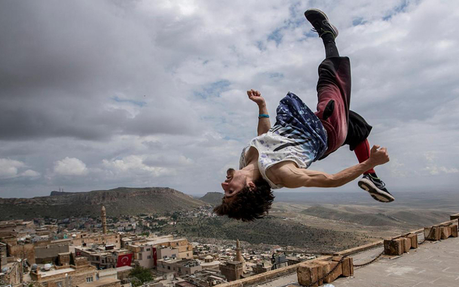

Паркур
Паркур (фр. parkour, искажённое от parcours, parcours du combattant — дистанция, полоса препятствий) — искусство рационального перемещения и преодоления препятствий, как правило, в городских условиях. Многими занимающимися воспринимается как стиль жизни. В настоящее время активно практикуется и развивается многими объединениями и частными лицами во многих странах. Сутью паркура является движение и преодоление препятствий различного характера. Таковыми могут считаться как существующие архитектурные сооружения (перила, парапеты, стены и пр.), так и специально изготовленные конструкции (применяемые во время различных мероприятий и тренировок).
Паркур — дисциплина, представляющая собой совокупность навыков владения телом, которые в нужный момент могут найти применение в различных ситуациях человеческой жизни. Основные факторы, используемые «трейсерами» (людьми, занимающимися паркуром): сила и верное её приложение, умение быстро оказаться в определённой точке пространства, используя лишь своё тело. Главной идеей паркура является выраженный Давидом Беллем принцип «нет границ, есть лишь препятствия, и любое препятствие можно преодолеть». Основные ограничения в паркуре накладываются тремя его аксиомами: Безопасность, Эффективность, Простота.
Паркур не учит использовать какие-либо средства или приспособления, а позволяет использовать только собственное тело и развивать навыки поведения в условиях «здесь и сейчас». Деревья, стены, крыши, парапеты и перила — обыкновенные препятствия трейсера. Крайне важны скорость реакции, умение оценивать обстановку и свои возможности.

Паркур не является видом спорта, который подразумевает состязания, конкуренцию, и стремление победить соперника. Идеология паркура отрицает данные принципы, паркуру чужды «показушность» и соревновательность. В этом в частности одно из его отличий от фрирана.
Для того, чтобы заниматься паркуром, человеку необходимо развиваться в целом ряде дисциплин. Прежде всего, необходимо познать себя, стремясь создать гармонию между телом и духом, оценить свои нынешние возможности и начать бороться со своими недостатками, страхами. Наиболее всего для этого подходит скалолазание. Также хорошим способом воспитания духа являются единоборства, где постоянно приходится бороться с психологическим фактором, нарабатывая стремление побеждать себя. Для развития навыков перемещения поможет и лёгкая атлетика.
Немаловажную роль также играет правильное питание трейсера. При занятии паркуром тело испытывает большие нагрузки и при плохом или несбалансированном питании ослабленный организм получает большой стресс, в результате чего тренировки становятся малоэффективными.